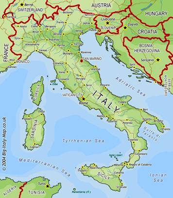

De acordo com os historiadores, a fundação de Roma resulta da mistura de três povos que foram habitar a região da península itálica: gregos, etruscos e italiotas.
Desenvolveram na região uma economia baseada na agricultura e nas atividades pastoris. A sociedade, nesta época, era formada por patrícios (nobres proprietários de terras) e plebeus (comerciantes, artesãos e pequenos proprietários). O sistema político era a monarquia, já que a cidade era governada por um rei de origem patrícia.
A religião neste período era politeísta, adotando deuses semelhantes aos dos gregos, porém com nomes diferentes. Nas artes destacava-se a pintura de afrescos, murais decorativos e esculturas com influências gregas.
Roma é capital da Itália, país europeu localizado em uma das penínsulas do Mar Mediterrâneo. Trata-se da Península Itálica, situada na cordilheira dos Alpes e banhada pelos mares Adriático, Tirreno e Jônico.
Esse conteúdo é pertencente à seguinte fonte:
Só História. "Antiguidade Clássica - Roma".